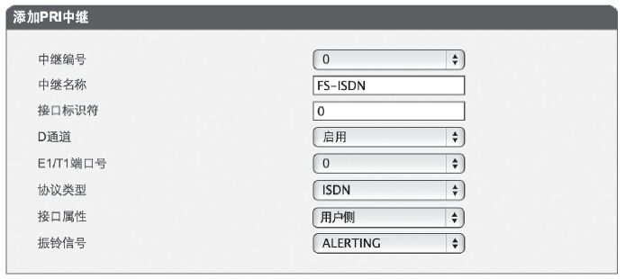
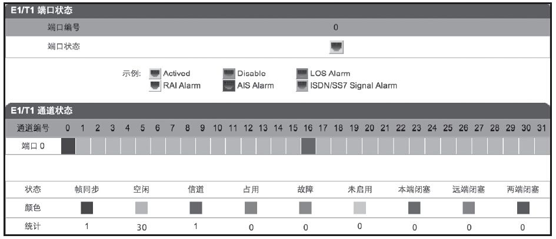
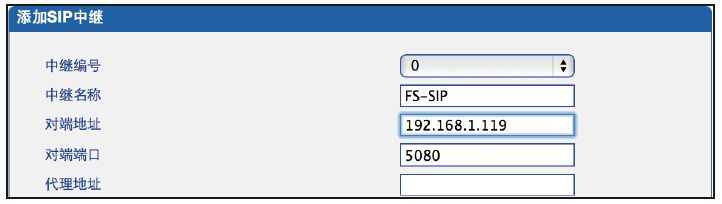
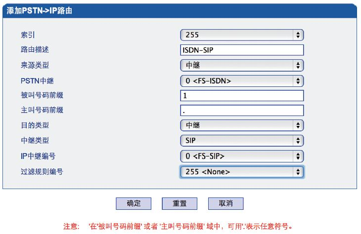
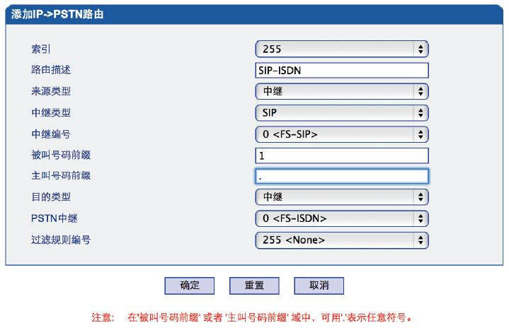
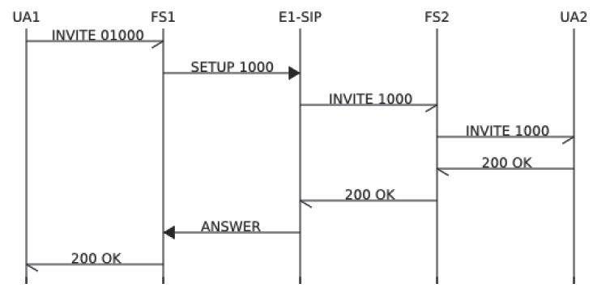
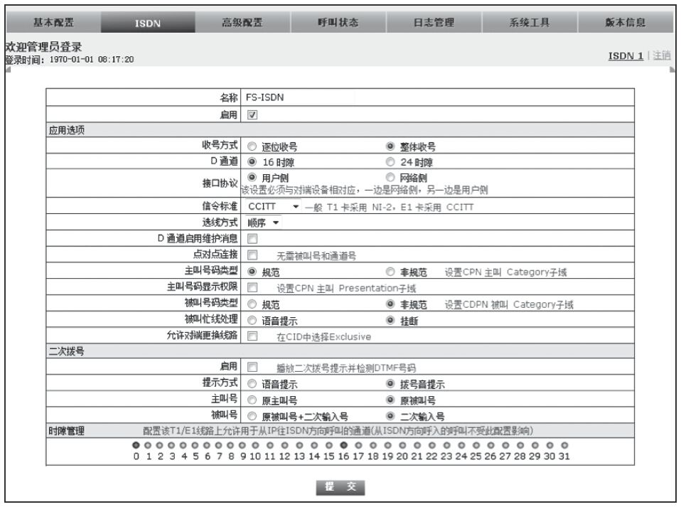

14.4 通过E1线路与其他系统对接
前面，我们讲过通过IMS或模拟中继线连接PSTN网络的例子。但很多时候，我们还是需要使用E1与其他系统对接。很典型地，某些运营商可能只提供E1线路，或者某些设备只提供E1接口。
类似我们在14.2.2节讲到的拓扑结构和对接方式，我们也可以使用E1网关或板卡来与其他系统对接。在14.2节，我们只讲了使用网关方式对接的例子。在这里，我们把两种对接方式都讲一下，以帮助读者有一个全面的了解。
我们将按图14-8所示的拓扑结构来搭建实验环境。其中FS1和FS2分别是两台装有FreeSWITCH的主机，它们分别具有IP地址192.168.1.115和192.168.1.119。FS1上装有E1板卡，可以通过E1线 [1] 与E1网关相连，同时E1网关又通过以太网（使用SIP协议）与FS2相连。
其中FreeSWITCH我们使用默认的安装和默认的配置。下面我们就来看一下需要经过哪些步骤可以让分别注册到FS1和FS2上的SIP用户互相打电话。
14.4.1 配置FS1
首先，我们来看一下FS1上的配置。FS1上需要安装硬件板卡，安装驱动程序等，因而这一部分配置是比较复杂的。而且我们也将在这里学到一些新的名词术语和概念等。
1.背景资料
传统的电话交换机都是以时分复用（TDM，Time Division Mutiplex）的方式工作的，因此，与传统交换机相连的设备及板卡都又统称为TDM设备或TDM板卡。在FS1上，我们需要使用E1板卡来支持E1接口。生产这类E1板卡的厂商有Sangoma和Digium等（当然，它们也生产模拟板卡），国内也有一些生产这种兼容卡的厂商，如OpenVox等。从历史上来讲，Digium成立于1999年，算是老牌子的板卡厂商，也就是它推动了Asterisk开源PBX软件的发展。Sangoma是一家创立于1984年的VoIP系统供应商，也是相当有历史的。Sangoma从FreeSWITCH诞生起就一直与FreeSWITCH社区深度合作，并且贡献了FreeTDM软件和mod_freetdm模块，用于配合各种硬件板卡在FreeSWITCH上工作。
最初，这些硬件板卡都是靠Zaptel [2] 来驱动的，FreeSWITCH中有一个对应的模块叫mod_openzap [3] 。后来，Sangoma公司贡献了并维护着mod_freetdm模块，因此就很少有人用mod_openzap了。同时，Digium也将Zaptel更名为DAHDI [4] ，并继续进行改进。该协议主要在Digium的板卡中使用，国内也有一些“Asterisk兼容卡”支持DAHDI协议。Sangoma公司的板卡除了支持Zaptel和DAHDI外，还支持自己的驱动Wanpipe。并且，一般认为在并发数较高的情况下Wanpipe协议比DAHDI表现要好。
FreeTDM作为Sangoma公司贡献的开源软件，可以单独使用，也可以与FreeSWITCH配合使用。而与FreeSWITCH的配合就是靠mod_freetdm将它们联系起来的。
在本质上，FreeTDM也是一个模块化的结构，我们可以在源代码目录中使用ls命令列出FreeTDM支持的子模块 [5] 。在FreeSWITCH源代码目录中执行ls命令的输出结果如下：
$ ls libs/freetdm/src/ftmod/
ftmod_analog/ ftmod_isdn/ ftmod_pika/ ftmod_sangoma_isdn/ ftmod_wanpipe/
ftmod_analog_em/ ftmod_libpri/ ftmod_pritap/ ftmod_sangoma_ss7/ ftmod_zt/
ftmod_gsm/ ftmod_misdn/ ftmod_r2/ ftmod_skel/
上面列出的这些子模块基本上可以分为两种——信令模块和IO模块。其中前者主要负责通话的建立和释放（如ftmod_isdn），类似于我们已经熟悉的SIP；而后者主要负责话音数据的输入输出（如ftmod_wanpipe），类似于我们熟悉的RTP。
在IO层，FreeTDM可以有两种工作模式，一种是DAHDI模式，它是由ftmod_zt驱动的，主要兼容DAHDI及Zaptel协议的板卡；另一种为Wanpipe模式，主要用于Sangoma生产的板卡。这里我们以Sangoma板卡为例来进行说明，因此，主要讲解Wanpipe模式。
关于Sangoma板卡的安装，涉及编译内核、安装各种驱动程序，以及进行各种配置等，操作起来比较复杂。下面的内容假定已经安装好了板卡及驱动。
2.安装和配置mod_freetdm
只有正确安装了Wanpipe及ISDN信令协议后才能在编译mod_freetdm时正确编译相关的模块。因此，需要确保上述步骤成功才能执行这一步。
跟安装其他模块类似，在FreeSWITCH源码目录直接执行以下命令就可以完成mod_freetdm的安装：
# make mod_freetdm
# make mod_freetdm-install
安装过程中安装脚本可以自动找到相应的驱动程序，并配置安装相关的FreeTDM子模块。
安装完成之后，可以在FreeSWITCH的conf目录中找到两个与FreeTDM相关的文件。其中，conf/freetdm.conf为FreeTDM的配置文件，内容如下：
[span wanpipe wp1]
trunk_type => e1
group=1
b-channel => 1:1-15
b-channel => 1:17-31
d-channel => 1:16
该配置文件的格式是类似于Windows中“.ini”文件的配置格式。其中第1行配置了一个Span，一个Span相当于板卡上的一个E1端口，它的类型是wanpipe，名称是wp1；trunk_type即中继的类型，这里是e1；group表示一个组号；该E1板卡上共有32个时隙（又称信道，即Channel），其中0时隙是传时钟同步的，在这里没有列出，16时隙为D信道（传信令），其他的30个时隙为B信道（传话音）。
另一个配置文件是mod_freetdm的模块配置文件，它位于conf/autoload_configs/freetdm.conf.xml。具体内容我们就不详细列举了，其中一部分如下：
<sangoma_pri_spans>
<span name="wp1" cfgprofile="my_pri_nt_1">
<param name="dialplan" value="XML"/>
<param name="context" value="default"/>
</span>
</sangoma_pri_spans>
其中，它定义了一个Span，名称wp1是与freetdm.conf中的Span的名字相对应的。并且，里面还定义了Dialplan和Context，用于对该E1中继的来话进行路由。
当然，读者可以发现这些配置的值都是我们在安装驱动时的配置向导生成的。后面也可以手工更改并重新加载。
确保wanrouter已经启动，然后就可以在FreeSWITCH控制台上使用如下命令加载mod_freetdm了：
freeswitch> load mod_freetdm
+OK Reloading XML
+OK
至此，安装的工作已经完成，并且看起来mod_freetdm也加载成功了。
加载mod_freetdm之后，可以在FreeSWITCH控制台上使用模块提供的ftdm命令查看E1板卡及各Span和Channel的状态，比如，使用以下命令列出当前系统配置的所有Span：
freeswitch> ftdm list
+OK
span: 1 (wp1)
type: Sangoma (ISDN)
physical_status: alarmed
signaling_status: DOWN
chan_count: 31
dialplan: XML
context: default
dial_regex:
fail_dial_regex:
hold_music:
analog_options: none
从上面的输出可以看到，我们只有一个Span（wp1），它的物理状态（physical_status）是alarmed（警告），信令状态（signaling_status）是DOWN，这意味着未连接。
如果这时候插入自环电缆，则可以看到FreeSWITCH控制台上会输出好多DEBUG级别的日志信息，标志状态的变化。重复上述命令会看到物理状态变成ok，但是信令状态仍然是DOWN（因为自环只能模拟一个“对端设备”，可以模拟物理连接的情况，无法与“对端”建立信令连接）。插入自环电缆后查看状态的输出如下：
freeswitch@ubuntu32> ftdm list
+OK
span: 1 (wp1)
type: Sangoma (ISDN)
physical_status: ok
signaling_status: DOWN
chan_count: 31
dialplan: XML
context: default
dial_regex:
fail_dial_regex:
hold_music:
analog_options: none
另外，也可以使用“ftdm dump”命令显示实际的Span中指定的时际的状态信息，如：
freeswitch> ftdm dump 1 1
+OK
span_id: 1
chan_id: 1
physical_span_id: 1
physical_chan_id: 1
physical_status: ok
physical_status_red: 0
physical_status_yellow: 0
physical_status_rai: 0
physical_status_blue: 0
physical_status_ais: 0
physical_status_general: 0
signaling_status: DOWN
type: B
state: DOWN
last_state: DOWN
txgain: 0.00
rxgain: 0.00
cid_date:
cid_name:
cid_num:
ani:
aniII:
dnis:
rdnis:
cause: NONE
session: (none)
“ftdm dump”命令可以将当前Span和Channel的状态显示输出，上面的例子中后面两个参数分别是Span号和Channel号。当然，如果省略Channel号，则会dump整个Span里面所有的Channel。
3.配置电话路由
虽然我们还没有与其他系统对接，但这里我们先把来、去话的路由准备好，等对端的设备准备好以后就可以直接打电话进行测试了。
注意，这里说的“来、去”的概念都是相对的——一路通话，对于一端来说是来话，对于另一端来说就是去话。我们这里涉及的设备比较多，因而一定要想清楚来话和去话是针对哪个设备来说的。
在FS1上，对于从E1上的来话而言，由于我们上面已经指定了将来话路由到XML Dialplan的default Context中，因此暂时不需要任何设置。
对于去话，我们在default Context中配置以下Dialplan，让本地用户在拨打以0开头的电话号码时将电话从E1端口上送出去。Dialplan的内容如下：
<extension name="E1">
<condition field="destination_number" expression="^0(.*)$">
<action application="bridge" data="freetdm/1/a/$1"/>
</condition>
</extension>
其中，正则表达式“0(.*)”表示匹配所有以被叫号码0开头的通话。如果匹配，则将实际的电话号码存储到“$1”变量中（不包括0）。然后，执行后续的Action。这里的Action只有一个bridge。其中，bridge是一个App，对此我们大家都很熟悉了。后面的freetdm为mod_freetdm提供的呼叫字符串，各参数是以“/”分隔的，其中freetdm为Endpoint的类型，后面的参数含义如下：
·“1”代表第一个Span [6] 。我们在这里只有一个Span。
·“a”代表选线规则。其中，小写的“a”表示从小到大选择一个空闲的时隙（Channel）并将电话送出，大写的“A”表示从大到小选择一个空闲时隙。注意如果双方同时选择一个时隙，将会发生“撞车”的现象。为了最大限度避免这种碰撞，相互对接的双方可以从不同的方向优先选择时隙。当然，如果真发生了“撞车”，也有相关机制保证有一方会自动放弃并选择下一个可用的时隙。
·“$1”表示实际送出的被叫电话号码。其中，从Dialplan的正则表达式中可以看到，“$1”的值中是不包括“0”的，即如果FS1上的用户拨叫了01000，实际送到E1线路上的被叫号码将是1000。这是一种常见的做法，通俗的说法就是在电话路由的时候“吃”掉前面的第一个“0”。
至此，FS1上的配置就结束了。我们再来看其他设备的配置。
14.4.2 配置E1网关设备
在这里，我们以鼎信通达的E1网关MTG1000为例。MTG1000是一款E1转SIP的网关设备（它只是完成E1/SIP话路的信令转换和路由，因此，我们还需要另外一个SIP服务器FS2才能完成通话测试）。
在进行下一步的测试之前，先使用E1交叉线将MTG1000和Sangoma A101连接起来。
该设备默认有两个以太网口。其中，网口0的默认地址是192.168.1.111，用于与其他SIP设备对接；网口1的默认地址是11.11.11.11，一般用于连接笔记本电脑以便对设备进行管理。
1.添加PRI中继
打开浏览器，进入管理界面，选择添加一个PRI中继，如图14-8所示。

图14-8 添加PRI中继
其中，中继编号使用默认的“0”；中继名称可以为“FS-ISDN”；接口标志符使用“0”；D通道选择“启用”；E1/T1端口号使用默认的“0”；协议类型选择“ISDN”（与我们FS1中的EuroISDN对应）；接口属性选择“设备侧”（与FS1中的相对，对方应该选择NET，即网络侧）；其他选项可以使用默认值。
单击“确定”按钮后保存设置。然后可以转到状态页面查看E1中继端口的状态。如图14-9所示，如果看到端口状态变成绿色的（状态是Actived）则表示链路正常了。

图14-9 E1中继状态
这时候也可以在FS1中使用ftdm list和ftdm dump等命令检测链路的状态。
2.添加SIP中继
与PRI中继相对应，在MTG1000中，与我们的SIP服务器FS2相连的SIP链路称为SIP中继。
如图14-10所示。在管理界面上选择添加SIP中继，中继编码使用默认的0；中继名称为FS-SIP；对端地址输入我们FS2的IP地址，在这里是192.168.1.119；对端端口使用5080，以防止对该网关设备进行鉴权，简化配置。

图14-10 添加SIP中继
其他的配置选项都使用默认的配置即可。单击“确定”按钮保存配置。
3.添加路由
有了E1中继和SIP中继，该网关的作用就是把这些中继串起来。而这种“串”就是靠MTG1000的由路功能实现的。
首先，我们添加一条路由，将从E1端口进来的通话路由到SIP中继上去。在MTG1000的管理界面上选择添加PSTN-IP路由，如图14-11所示。

图14-11 添加PSTN到SIP路由
其中，索引号使用默认的255；路由描述中我们填上“ISDN-IP”；来源类型选择“中继”；PSTN中继选择我们刚刚创建的“0”；被叫号码前缀填入“1”，即从该E1线路进来的，而且被叫号码为1的电话将走这一条路由；主叫号码前缀由于我们不关心，这里可以填入“.”以接受任意主叫号码；目的类型选择“中继”；中继类型选择“SIP”；IP中继编号即我们刚刚创建的SIP中继“0”；其他参数使用默认值。
上面的配置的目的就是，从E1来的呼叫若满足一定的主、被叫号码规则，则路由到一条SIP中继上去。
用类似的方法可以配置一条SIP到E1的中继，让从SIP侧过来的通话能送到E1上去。如图14-12所示，参数的含义与上面的类似，在这里就不多介绍了。

图14-12 添加SIP到PSTN路由
14.4.3 配置FS2
在FS2侧，对于来话而言，由于MTG1000将电话路由到了5080端口，因此来话将进入public Dialplan，而public Dialplan已经有默认的Dialplan可以将电话路由到本地用户了。
对于去话而言，则需要把MTG1000也看成一个网关，在FS2上配置一个网关并将电话路由到该网关即可。或者直接在default Dialplan中使用如下配置将去话送到MTG1000所在的IP地址上：
<extension name="MTG1000">
<condition field="destination_number" expression="^0(.*)$">
<action application="bridge" data="sofia/external/$1@192.168.1.111"/>
</condition>
</extension>
其中，192.168.1.111为MTG1000的IP。
1.拨打测试
我们上面配置了FS1、MTG1000网关及FS2，下面可以进行拨打测试了。如果FS1上的用户1000想呼叫FS2上的用户1001，则拨打0加上对方的号码，如01001；电话在FS1上进行路由时被叫号码最前面的0会被Dialplan“吃”掉，并将剩下的1001送到E1中继网关MTG1000上；MTG1000在收到来自E1中继的来话后，查找本地的路由表，并将该电话送到配置好的SIP中继上，实际上就是送到我们的FS2的5080端口上；FS2在5080端口上接收到来话后，即查找本public Dialplan，将最终向本地用户1000振铃，1000接起电话后就可以进行通话了。呼叫流程如图14-13所示。

图14-13 呼叫流程
反过来从FS2到FS1的通话流程跟上面差不多，读者可以自行推演。
通话过程中，读者也可以使用“ftdm dump”命令查看当前Span的占用状态。如：
freeswitch> ftdm dump 1 5
span_id: 1
chan_id: 5
physical_span_id: 1
physical_chan_id: 5
physical_status: ok
physical_status_red: 0
physical_status_yellow: 0
physical_status_rai: 0
physical_status_blue: 0
physical_status_ais: 0
physical_status_general: 0
signaling_status: UP
type: B
state: UP
last_state: PROCEED
txgain: 0.00
rxgain: 0.00
cid_date:
cid_name:
cid_num: 1000
ani: 1000
aniII:
dnis: 1001
rdnis:
cause: NONE
session: c854e884-1c97-11e3-befe-0f1ace9d0d7b
-- States -- -- Function -- -- Location -- -- Time Offset --
DOWN => RING [sngisdn_process_con_ind] [ftmod_sangoma_isdn_stack_hndl] 0ms
RING => PROCEED [channel_on_routing] [mod_freetdm.c:456] 5ms
PROCEED => UP [channel_receive_message_b] [mod_freetdm.c:991] 10ms
Time since last state change: 91886ms
如果在测试的过程中，出现电话不通的情况，那么很可能是配置的时候漏掉了某些地方或写错了某些参数，最好的解决办法是按这里的描述再重新检查一遍所有的配置，根据界面上（见图14-9）的状态指示检查链路和端口状态。如果还是有问题，则复习一下我们在第10章里讲的排错方法，应该很容易就能找到问题。
2.指定中继拨打
在实际应用中，有时需要经常测试某条线路的好坏。而如果使用出局路由自动选线的方式选择到的某一条中继或时隙可能是未知的。所以我们需要一种方法能测试指定选择的某条中继或时隙，这种测试方法就称为指定中继拨打。
我们先来看如下的freetdm呼叫字符串，在这里不使用“a”或“A”的选线方式，而是直接指定从某个时隙呼出，如：
freeswitch> originate freetdm/1/5/1000 &echo
+OK c854e884-1c97-11e3-befe-0f1ace9d0d7b
上述命令从第一个Span的第5个时隙呼出，并在本端执行echo，对端接听后可以听到自己的回声。
如果我们不挂机再重复执行一次，可以看到由于该时隙已被占用，并返回拥塞消息NORMAL_CIRCUIT_CONGESTION：
freeswitch> originate freetdm/1/5/1000 &echo
-ERR NORMAL_CIRCUIT_CONGESTION
了解了上述方法以后，我们可以设置以下Dialplan进行指定中继拨打。
<extension name="Dial specific trunk">
<condition field="destination_number" expression="^\*22([0-9])([0-9])(.*)$">
<action application="bridge" data="freetdm/$1/$2/$3"/>
</condition>
</extension>
其中，正则表达式为“^\*22([0-9])([0-9])(.*)$”。如果我们呼叫“*22151000”，则它与正则表达式匹配。其中，“*22”相当于我们指定中继拨打的功能码；接下来的1匹配第一个括号里的“[0-9]”，被记到变量“$1”中；同理，“5”被记到变量“$2”中；后面的“1000”被记到变量“$3”中。因此，最后呼叫字符串“freetdm/$1/$2/$3”将变成“freetdm/1/5/1000”，即从第一个Span的第5个时隙呼出。
如果我们想从第6个时隙呼出，则可以呼叫“*22161000”。通过这种方法，可以呼叫任意的时隙 [7] ，这便是指定中继拨打的含义。
14.4.4 对接其他厂家的E1网关
作为一个对比，我们也来看一下与迅时E1数字网关的对接。这里我们使用的设备型号是MX100-TG。其中FS1与FS2的配置保持不变。在MX100-TG上，我们也需要与14.4.2节描述的一样——设置ISDN和SIP侧的参数、添加双向的路由等。不过，后面我们可以看到，迅时网关的配置步骤比较简洁。
1.ISDN设置
MX100-TG的配置界面与MX8类似。打开浏览器，进入管理界面，选择ISDN，便看到如图14-14所示的配置界面。

图14-14 添加ISDN中继
其中，ISDN链路的名称我们可以为FS-ISDN；收号方式选择默认的整体收号；D通道选择默认的16时隙；接口协议选择默认的用户侧（与FS1中的相对，对方应该选择NET，即网络侧）；信令标准选择默认的CCITT；选线方式可以选择默认的顺序，也可以选择其他的选线方式；其他选项可以使用默认值。
单击“提交”按钮后保存设置，设置即可生效。如果一切正常，则E1链路就会变成正常的连通状态，在图14-14所示的界面上也能观察到。
2.路由设置
迅时系列的网关，可以直接将SIP通话路由到IP，因而不需要设置明确的SIP中继。为了能让FS1与FS2之间互打，我们只需简单地设置以下两条路由：
ISDN x ROUTE IP 192.168.1.119:5080
IP x ROUTE ISDN 1
其中，第一条与在模拟网关MX8中的设置类似，即所有从ISDN侧来的呼叫，不管被叫号码是什么，全部（通过SIP）路由到FS2的IP地址上去（192.168.1.119:5080）；而第二条也很容易理解，即所有从IP侧来的SIP呼叫，全部路由到第1条ISDN链路（E1）上去（如果有多个E1的话，也可以使用类似模拟线的配置方式，如“1,2,3,4”选择不同的E1链路）。
[1] 设备之间对接需要使用E1交叉线。E1线由4条线组成，其中2条是收（接收），2条是发（发送）。交叉线的含义就是一端的“收”要接到对端的“发”上。物理接口一般有两种，一种是RJ48（物理上跟RJ45相同，只是线序不同）双绞线接口，阻抗为120Ω；另一种是同轴电缆接口，阻抗是75Ω。也有在这两种物理接口转换的适配电缆。
[2] Zaptel指Jim Dixon的开放电脑电话硬件驱动API，后来Digium公司生产了相关的板卡并改进了该API。参见http://www.voip-info.org/wiki/view/Zaptel。
[3] 注意，该模块的源代码不在src/mod目录下，而是在libs/openzap目录下。
[4] DAHDI即Digium Asterisk Hardware Device Interface的缩写。由于注册商标问题，Zaptel于2008年更名为DAHDI。参见http://blogs.digium.com/2008/05/19/zaptel-project-being-renamed-to-dahdi/。
[5] 为了与FreeSWITCH中的模块相区别，我们在这里称FreeTDM的模块为“子模块”。
[6] 在主机上装有多个Span的情况下，也可以将任意的时隙在逻辑上组成一个分组，因此这里也可以填入一个组名。一个分组可以跨越多个Span，在这里就不多介绍了，有兴趣的读者可以参见http://wiki.freeswitch.org/wiki/FreeTDM。
[7] 实际上，这里的Dialplan不支持呼叫2位数的时隙，读者可以自已练习一下，看能否通过所学的知识自己实现。